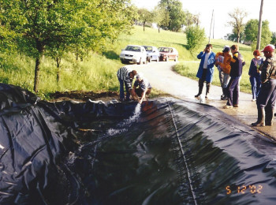

Welcome to Popravilo vodovoda
10 najboljši Strokovnjaki za vodovodno inštalacijo v Ptuj
2020.09.07 05:54
Razišči Registriraj se kot profesionalec Prijavi se Prijavi se Prijavi se Prijavi se Registriraj se kot profesionalec Razišči
Ptuj, Podravska 44 Strokovnjaki za vodovodno inštalacijo v tvoji bližini
StarOfService Podravska Ptuj Strokovnjaki za vodovodno inštalacijoNajemite najboljši Strokovnjaki za vodovodno inštalacijo
v Ptuj
1. H.E.S. Skupina D.O.O.
Strokovnjak za vodovodno inštalacijo - 28.9 km od Ptuj
2000 Maribor Trenutno na voljo - vodovod, kanalizacija, ogrevanje(toplotne črpalke, plinske peči, peči na trdo gorivo...) - regulacije in termostati (Več) (Prikaži manj) Več 1. Kontakt2. Sms-Sanacija D.O.O.
Strokovnjak za vodovodno inštalacijo - 5.1 km od Ptuj
2288 Hajdina Trenutno na voljo Večletne izkušnje na področju strojnih inštalacij in adaptacij (Več) (Prikaži manj) Več 2. Kontakt3. G.T.G.S., D.O.O., Veržej
Strokovnjak za vodovodno inštalacijo - 36.8 km od Ptuj
9241 Veržej Trenutno na voljo Obnova stanovanj ostresij Poslovnih prostorov ... (Več) (Prikaži manj) Več 3. Kontakt4. Pleskarstvo Matjaz Cegnar S.P.
Strokovnjak za vodovodno inštalacijo - 17.6 km od Ptuj
2230 Lenart v Slovenskih goricah Trenutno na voljo Iscete ugodne,kvalitetne in hitre storitve?vse to in se vec vam nudi matjaz cegnar s.p. tel *information hidden* - pleskarska dela -oblaganje tal in sten -vzdrzevalna dela in hisniska dejavnost -vgrajevanje stavbnega pohistva -splosno ciscenje stavb (Več) (Prikaži manj) Več 4. Kontakt5. Klima Ptuj D.O.O.
Strokovnjak za vodovodno inštalacijo
2250 Ptuj Trenutno na voljo (Več) (Prikaži manj) Več 5. Kontakt6. Peter Kolaric S.P.
Strokovnjak za vodovodno inštalacijo
2250 Ptuj Trenutno na voljo (Več) (Prikaži manj) Več 6. Kontakt7. Noko D.O.O.
Strokovnjak za vodovodno inštalacijo
2250 Ptuj Trenutno na voljo (Več) (Prikaži manj) Več 7. Kontakt8. Arnuš Ivan S.P. - Roletarstvo , Proizvodnja In Storitve
Strokovnjak za vodovodno inštalacijo
2250 Ptuj Trenutno na voljo (Več) (Prikaži manj) Več 8. Kontakt9. Aluterm Trgovina D.O.O.
Strokovnjak za vodovodno inštalacijo
2250 Ptuj Trenutno na voljo (Več) (Prikaži manj) Več 9. Kontakt10. Metalotehna Proizvodnja, Trgovina In Storitve D.O.O.
Strokovnjak za vodovodno inštalacijo
2250 Ptuj Trenutno na voljo (Več) (Prikaži manj) Več 10. Kontakt11. Kokol Martin S.P. Kleparstvo
Strokovnjak za vodovodno inštalacijo
2250 Ptuj Trenutno na voljo (Več) (Prikaži manj) Več 11. Kontakt12. Finom D.O.O.
Strokovnjak za vodovodno inštalacijo
2250 Ptuj Trenutno na voljo (Več) (Prikaži manj) Več 12. Kontakt13. Pilinger Silvo S.P. - Podjetje Za Trgovino In Storitve- Vodovodne, Plinske Instalacije, Cen
Strokovnjak za vodovodno inštalacijo
2250 Ptuj Trenutno na voljo (Več) (Prikaži manj) Več 13. Kontakt14. Gabrovec Janko S.P. - Inštalacija Centralnih Kurjav In Manjše Popravilo Vodovoda
Strokovnjak za vodovodno inštalacijo
2250 Ptuj Trenutno na voljo (Več) (Prikaži manj) Več 14. Kontakt15. Mizarstvo Janez Forštnarič S.P.
Strokovnjak za vodovodno inštalacijo
2250 Ptuj Trenutno na voljo (Več) (Prikaži manj) Več 15. Kontakt16. Vogl Hobl Mizarski Servis, Voglar Davorin S.P.
Strokovnjak za vodovodno inštalacijo
2250 Ptuj Trenutno na voljo (Več) (Prikaži manj) Več 16. Kontakt17. Miran Kelner S.P.
Strokovnjak za vodovodno inštalacijo
2250 Ptuj Trenutno na voljo (Več) (Prikaži manj) Več 17. Kontakt18. Tesarstvo, Krovstvo In Splošna Gradbena Dela, Marko Strgar S.P.
Strokovnjak za vodovodno inštalacijo
2250 Ptuj Trenutno na voljo (Več) (Prikaži manj) Več 18. Kontakt19. Thl Termo, D.O.O.
Strokovnjak za vodovodno inštalacijo
2250 Ptuj Trenutno na voljo (Več) (Prikaži manj) Več 19. Kontakt20. Erijona D.O.O.
Strokovnjak za vodovodno inštalacijo
2250 Ptuj Trenutno na voljo (Več) (Prikaži manj) Več 20. Kontakt21. Kos Husein S.P.
Strokovnjak za vodovodno inštalacijo
2250 Ptuj Trenutno na voljo (Več) (Prikaži manj) Več 21. Kontakt22. R-Maj D.O.O.
Strokovnjak za vodovodno inštalacijo
2250 Ptuj Trenutno na voljo (Več) (Prikaži manj) Več 22. Kontakt23. Epc Mont D.O.O.
Strokovnjak za vodovodno inštalacijo
2250 Ptuj Trenutno na voljo (Več) (Prikaži manj) Več 23. Kontakt24. Gorazd Selisek S.P.
Strokovnjak za vodovodno inštalacijo
2250 Ptuj Trenutno na voljo (Več) (Prikaži manj) Več 24. Kontakt25. Selišek Gorazd S.P.
Strokovnjak za vodovodno inštalacijo
2250 Ptuj Trenutno na voljo (Več) (Prikaži manj) Več 25. Kontakt26. Rasl Ignac S.P. - Vodovodne Instalacije, Kanalizacije
Strokovnjak za vodovodno inštalacijo
2250 Ptuj Trenutno na voljo (Več) (Prikaži manj) Več 26. Kontakt27. Dusan Lah S.P.
Strokovnjak za vodovodno inštalacijo
2250 Ptuj Trenutno na voljo (Več) (Prikaži manj) Več 27. Kontakt28. Altermo D.O.O.
Strokovnjak za vodovodno inštalacijo
2250 Ptuj Trenutno na voljo (Več) (Prikaži manj) Več 28. Kontakt29. Komal D.O.O.
Strokovnjak za vodovodno inštalacijo
2250 Ptuj Trenutno na voljo (Več) (Prikaži manj) Več 29. Kontakt30. Ibraimi Nizamedin S.P.
Strokovnjak za vodovodno inštalacijo
2250 Ptuj Trenutno na voljo (Več) (Prikaži manj) Več 30. Kontakt31. Kitec Sanitarna In Ogrevalna Tehnika D.O.O. - V Stečaju
Strokovnjak za vodovodno inštalacijo
2250 Ptuj Trenutno na voljo (Več) (Prikaži manj) Več 31. Kontakt32. Robert Grandl S.P.
Strokovnjak za vodovodno inštalacijo
2250 Ptuj Trenutno na voljo (Več) (Prikaži manj) Več 32. Kontakt33. Gardona, Storitve Inštaliranja Naprav In Trgovina, Miha Ciglar S.P.
Strokovnjak za vodovodno inštalacijo
2250 Ptuj Trenutno na voljo (Več) (Prikaži manj) Več 33. Kontakt34. Gorazd Selišek S.P. Prodaja, Montaža In Servis Klimatskih Naprav
Strokovnjak za vodovodno inštalacijo
2250 Ptuj Trenutno na voljo (Več) (Prikaži manj) Več 34. Kontakt35. Biškup Mirko S.P.-Ogrevanje In Vodovod
Strokovnjak za vodovodno inštalacijo
2250 Ptuj Trenutno na voljo (Več) (Prikaži manj) Več 35. Kontakt36. Rašl Ignac S.P. - Vodovodne Instalacije, Kanalizacije
Strokovnjak za vodovodno inštalacijo
2250 Ptuj Trenutno na voljo (Več) (Prikaži manj) Več 36. Kontakt37. Jelen Srečko S.P. Kleparstvo, Krovstvo, Vgradnja Strešnih Oken
Strokovnjak za vodovodno inštalacijo
2250 Ptuj Trenutno na voljo (Več) (Prikaži manj) Več 37. Kontakt38. Epc Mont, Inženiring, Trgovina, Proizvodnja, Storitve D.O.O.
Strokovnjak za vodovodno inštalacijo
2250 Ptuj Trenutno na voljo (Več) (Prikaži manj) Več 38. Kontakt39. Carbon4 Podjetje Za Trgovino, Inženiring In Storitve D.O.O.
Strokovnjak za vodovodno inštalacijo
2250 Ptuj Trenutno na voljo (Več) (Prikaži manj) Več 39. Kontakt40. Instalacije Grandl, Robert Grandl S.P.
Strokovnjak za vodovodno inštalacijo
2250 Ptuj Trenutno na voljo (Več) (Prikaži manj) Več 40. Kontakt41. Thl Termo, Gradbene Storitve In Strojne Inštalacije, D.O.O.
Strokovnjak za vodovodno inštalacijo
2250 Ptuj Trenutno na voljo (Več) (Prikaži manj) Več 41. Kontakt42. Gardona, Miha Ciglar S.P.
Strokovnjak za vodovodno inštalacijo
2250 Ptuj Trenutno na voljo (Več) (Prikaži manj) Več 42. Kontakt43. Lah Branko S.P. - Popravilo Traktorjev, Kmetijskih Strojev In Avtomehanika - Mehanika Lah
Strokovnjak za vodovodno inštalacijo
2250 Ptuj Trenutno na voljo (Več) (Prikaži manj) Več 43. Kontakt44. Ferencic Franc S.P. - Servis Hladilnih Naprav
Strokovnjak za vodovodno inštalacijo
2250 Ptuj Trenutno na voljo (Več) (Prikaži manj) Več 44. KontaktPrejšnje Povpraševanje
Za Strokovnjaki za vodovodno inštalacijo v Ptuj"Potrebujete Strokovnjak za vodovodno inštalacijo?"
Božana G. Kakšno delo potrebujete?Popravilo
Kakšne težave imate?Ne težav, potrebujem zgolj namestitev
Kateri del Strokovnjak za vodovodno inštalacijo sistema potrebuje delo?Umivalnik ali pipa
Kako dolgo že imate težavo?Ni težav, potrebujem zgolj namestitev
Katera soba potrebuje Strokovnjak za vodovodno inštalacijo delo?Kuhinja
Boste priskrbeli vse potrebne materiale in rezervne dele?Da, vendar potrebujem pomoč strokovnjaka
Kako je stavba povezana z vodovodom in kanalizacijo?Občinska voda
Katero vrsto posesti imate?Dom
Je kateri del zgradbe poplavljen?Ne
Mora Strokovnjak za vodovodno inštalacijo vedeti še kaj drugega?Pipa trenutno iz stene, spremenili bi jo, da bi bila iz pomivalnega korita, samo mrzla voda, da bi lahko namestili delimano pipo z grelcem za vodo.
Kdaj potrebujete Strokovnjak za vodovodno inštalacijo?nedelja 14 februar 2016 (14/02/2016)
več Povprečna cena 1€ Kontakt Popularno v mestu Ptuj Splošni izvajalec Železar Nepremičninski agent Ponudnik gradbenih storitev Zdravnik Frizerji Zračni fotograf Komercialni fotograf Fotograf za dogodke Poročni fotograf Načrtovalec porok Fotograf foto knjig Čistilec Strokovnjaki za bojlerje in radiatorje Gospodinja Pleskar za stanovanja Vozniki tovornjakov Učitelj Strokovnjak za prehrano Strokovnjak za digitalni marketing Več Explore on StarOfService Strokovnjak za gospodinjske aparate Serviser hišnih aparatov Izdelovalec omaric Tesarji Mizar Monter vrat Serviser vrat Profesionalec za namestitev elektrike Mojster Monter luči Serviser luči Ključavničar Freskar Strokovnjak za odstranjevanje vonjav Strokovnjak za čiščenje barve Cevovodar Upravljalec premoženja Cenilec nepremičnin Nepremičninski inšpektor Strokovnjak za stopnice Več Blizu vas Stoperce Makole Kog Hoče Majšperk Slovenska Bistrica Žetale Sveti Duh na Ostrem Vrhu Lenart v Slovenskih goricah Ptujska Gora Miklavž pri Ormožu Bistrica ob Dravi Velika Nedelja Zavrč Juršinci Limbuš Ivanjkovci Polenšak Zgornja Velka Središče ob Dravi Več Več Združeni arabski emirati Afganistan Antigva in Barbuda Albanija Armenija Angola Argentina Avstrija Avstralija Bosna in Hercegovina Bangladeš Belgija Bolgarija Burundi Benin Bolivija Brazilija Bahami Belorusija Belize Kanada Kongo - Brazzaville Švica Slonokoščena obala Čile Kamerun Kitajska Kolumbija Kostarika Kuba Ciper Češka Nemčija Džibuti Danska Dominika Dominikanska republika Ekvador Estonija Egipt Španija Etiopija Finska Fidži Mikronezija Francija Gabon Grenada Gambija Grčija Gvatemala Gvajana Posebno administrativno območje LR Kitajske Hongkong Honduras Hrvaška Haiti Madžarska Indonezija Irska Izrael Indija Irak Iran Islandija Italija Jamajka Japonska Kenija Kirgizistan Saint Kitts in Nevis Južna Koreja Kazahstan Saint Lucia Lihtenštajn Šrilanka Lesoto Litva Luksemburg Latvija Libija Maroko Moldavija Črna gora Madagaskar Mali Mongolija Malta Mauritius Malavi Mehika Malezija Mozambik Nigerija Nikaragva Nizozemska Norveška Nova Zelandija Oman Panama Peru Filipini Pakistan Poljska Portugalska Palau Paragvaj Katar Romunija Srbija Rusija Salomonovi otoki Sejšeli Švedska Singapur Slovenija Slovaška Sierra Leone San Marino Senegal Somalija Sao Tome in Principe Salvador Otoki Turks in Caicos Timor-Leste Tunizija Tonga Turčija Tuvalu Tajvan Tanzanija Ukrajina Uganda Združeno kraljestvo Združene države Amerike Urugvaj Uzbekistan Saint Vincent in Grenadine Venezuela Vietnam Vanuatu Samoa Južnoafriška republika Francija Nemčija Združeno kraljestvo Španija Italija Poljska Pridruži se nam Francija Nemčija Združeno kraljestvo Španija Italija Poljska Podjetje O nas Ekipa Kariere: Tisk & mediji Pravno obvestilo Splošni pogoji poslovanja & Politika zasebnosti Stranke Kako deluje? Varnost Storitve v vaši bližini Profesionalci Kako deluje? Registriraj se Zgodbe o uspehu Live Imate kakšna vprašanja ali potrebujete pomoč? Center za pomoč Pridruži se nam www.starofservice.si ima oceno 4.6 / 5 s strani 38875 uporabnikov Narejeno z v Parizu 2020 StarOfService SAS